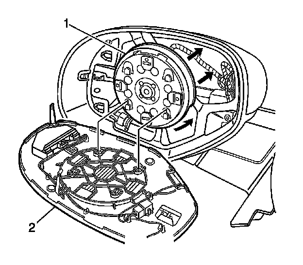
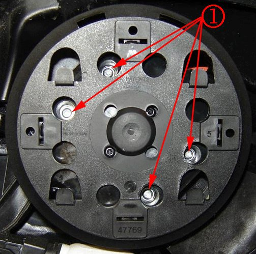
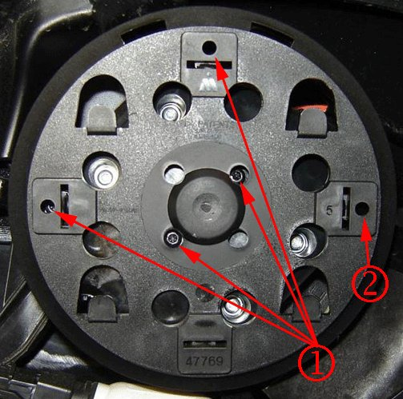
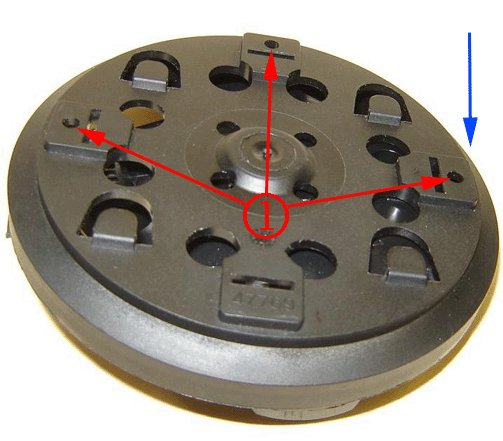
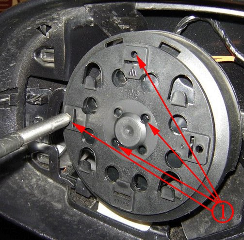
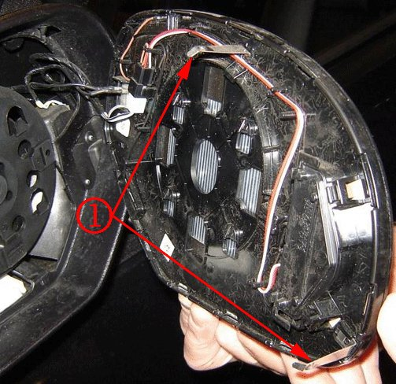
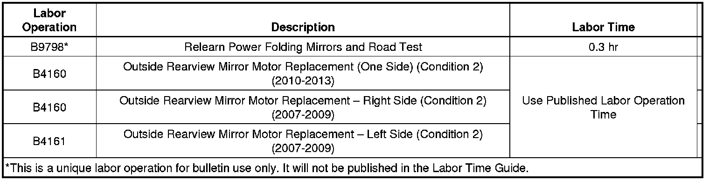

Body - LH/RH Outside Rearview Mirror Glass Shake/Flutter
TECHNICALBulletin No.: 06-08-64-027K
Date: August 07, 2012
Subject: -Mirror Housing and/or Mirror Glass Shake, Flutter, Vibration Power Outside Rearview, OSRV, Left, Right (Perform Repairs as Outlined)
Models:
2007-2013 Cadillac Escalade, Escalade ESV, Escalade EXT
2007-2013 Chevrolet Avalanche, Silverado, Suburban, Tahoe
2007-2013 GMC Sierra, Yukon, Yukon XL, Yukon Denali, Yukon Denali XL
Equipped with Power Outside Rearview Mirror (RPOs DL3, DL8, DPN)
Supercede:
This bulletin is being revised to add the 2013 model year and update the Condition, Cause and Correction information. Please discard Corporate Bulletin Number 06-08-64-027J (Section 08 - Body and Accessories).
Condition 1
Some customers may comment that the outside rearview mirror (OSRVM) housing and glass shakes, flutters or vibrates while driving. This may be noticeable at any speed with slight road input.
Cause 1
For power folding mirrors only, the mirror may have been manually folded or unfolded, or obstructed while power folding, possibly causing the folding mechanism to become out of sync.
Correction 1
Perform a road test of the vehicle to determine whether the customer's concern is related to mirror housing movement (Condition 1) or mirror glass movement (Condition 2) then proceed with the appropriate repair procedure.
Note
A popping noise may be heard during the resetting of the mirror power fold mechanisms. This sound is normal after a manual fold and/or unfold has occurred.
1. Cycle the mirrors through three complete power fold and unfold events. This will cause a relearn of the mirror positions and a reset of the power fold mechanisms.
2. Perform a road test and inspect the mirror housing and mirror glass for stability.
3. If stability of the mirror housing is not corrected, the mirror assembly must be replaced.
4. If stability of the mirror housing has been corrected, but the mirror glass exhibits a shake, flutter or vibration, proceed to Correction 2.
Condition 2
Some customers may comment that the outside rearview mirror (OSRVM) glass shakes, flutters, or vibrates while driving. This may be most noticeable at freeway speeds.
Cause 2
For all power glass adjustment mirrors, one or more of the following items may be the cause of the mirror glass shake, flutter or vibration:
- The motor/actuator assembly to mirror housing mounting screws may be loose, allowing the actuator assembly to move in relation to the mirror housing.
- The motor/actuator housing cover retaining screws may be loose, allowing the actuator adjustment arms to exhibit excessive looseness.
- The mirror glass anti-rattle springs may not have enough tension against the mirror housing.
Correction 2
Perform a road test of the vehicle to determine whether the customer's concern is related to mirror housing movement (Condition 1) or mirror glass movement (Condition 2), then proceed with the appropriate repair procedure.
Important
DO NOT replace the motor/actuator assembly for this concern.

1. Remove the affected OSRV mirror glass (2) from the motor/actuator assembly (1). Refer to Outside Rearview Mirror Glass Replacement in SI.

2. Identify the four motor/actuator assembly to mirror housing mounting screw (silver colored screws) locations (1).
3. Using a T10 Torx, tighten the four motor/actuator assembly to mirror housing mounting screws (1) as specified. Do Not over tighten the screws.
Tighten
Tighten the screws to 1.13-1.6 Nm (10-14 lb in).

Note
Driver's side mirror locations (1) shown; the outboard screw location (2) is opposite on the passenger side mirror.
4. Identify the four motor/actuator housing cover retaining screw (black color screws) locations (1).

5. To access the motor/actuator housing cover retaining screws located along the outer edge (1), tilt the mirror glass adapter plate inward toward the motor/actuator housing as appropriate.

6. Using a T10 Torx, tighten the four motor/actuator housing cover retaining screws (1) until secure. DO NOT over tighten the screws.

Note
For DL3 and DL8 mirrors, this step applies to the driver's side mirror only. The passenger side mirror does not have anti-rattle springs. For the DPN mirror, both driver and passenger upper mirrors have 3 anti-rattle springs.
Note
DL3 and DL8 mirrors on early vehicles incorporated one anti-rattle spring. Later designs incorporate two anti-rattle springs.
7. Bend the metal anti-rattle springs (1) outward slightly to increase the tension engagement to the mirror housing.
8. Install the OSRV mirror glass (2) to the motor/actuator assembly (1), taking care not to allow the anti-rattle spring fingers to unseat from their intended tracks in the mirror housing. Refer to Outside Rearview Mirror Glass Replacement in SI.
Warranty Information
Important
Only one Labor Operation should be claimed depending on the actual repair.

For vehicles repaired under warranty, use the table above.

Disclaimer